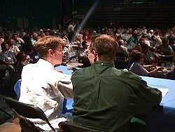

General Synod Olympics Update
A light-hearted "update" by synod youth members
|  |
Two youth members of synod give members the General Synod Olympics update |
"Welcome to the 1998 General Synod Anglican Olympics!
We will start with an update
from the water balloon baptism: Trudy Lebans whose patented "Scatter shot"
method soaked 6 kids in one shot. A new Heavenly record.
Moving on to Incense Polo- Team Catholic is beating the Uniteds 14 to 0. It seems that
Team United forgot their thuribles.
Archbishop Michael Peers has placed an appeal after his disqualification for illegal use
of a crook during the Bishop's Race to trip Archbishop David Crawley.
We will give you an update on the ABC Runabout as soon as we get the prices for you.
There has been an official ruling that SuperSoakers will be allowed for distributing
communion wine during the Eucharistic Sprint.
We're into day 7 of the Biblical Marathon. Participants must match each other quote for
quote, and several members are beginning to show signs of fatigue. Now that quotations
from the Apocrypha have been deemed legal by the Assessors, there is no end in sight. We
have word from the floor: they're beginning the New Testament round, and contestants are
pacing themselves.
The cathedrals have been disqualified from the Cruficix Javelin throw as the excessive
ornamentation on their Cruficixes has been ruled illegal.
High winds wreaked havoc with the wafer discus. There were wafers all over the ground, but
the birds wouldn't eat them because even they don't believe the wafers are bread.
This just in: the Ecclesiastical Province of British Columbia is being tested for
marijuana consumption after finishing dead last in the Speed Walk Recessional. Yet they
were somehow the first ones at lunch.
Dr. J. Daniels has disqualified all bishops from the Common Praise Press afer they tested
positive for scotch consumption. Bishop Terry Finlay is being investigated for his role in
scotch distribution. We expect high scores in the Common Praise Press as you can get an
awful lot of not-yet-available books onto a barbell.
We are looking forward to the 4 by 100 BCP relay later this week. The Prayerbook Society
is expected to sweep this event after the Faith, Worship, and Ministry committee has
announced that it is boycotting the event for lack of the word Huldah in the Eucharistic
Prayer in the BCP.
We look forward to bringing you updates from the 2001 General Synod Olympics in Waterloo.
Until then, this is Simon and Stephe saying Keep on rowing."